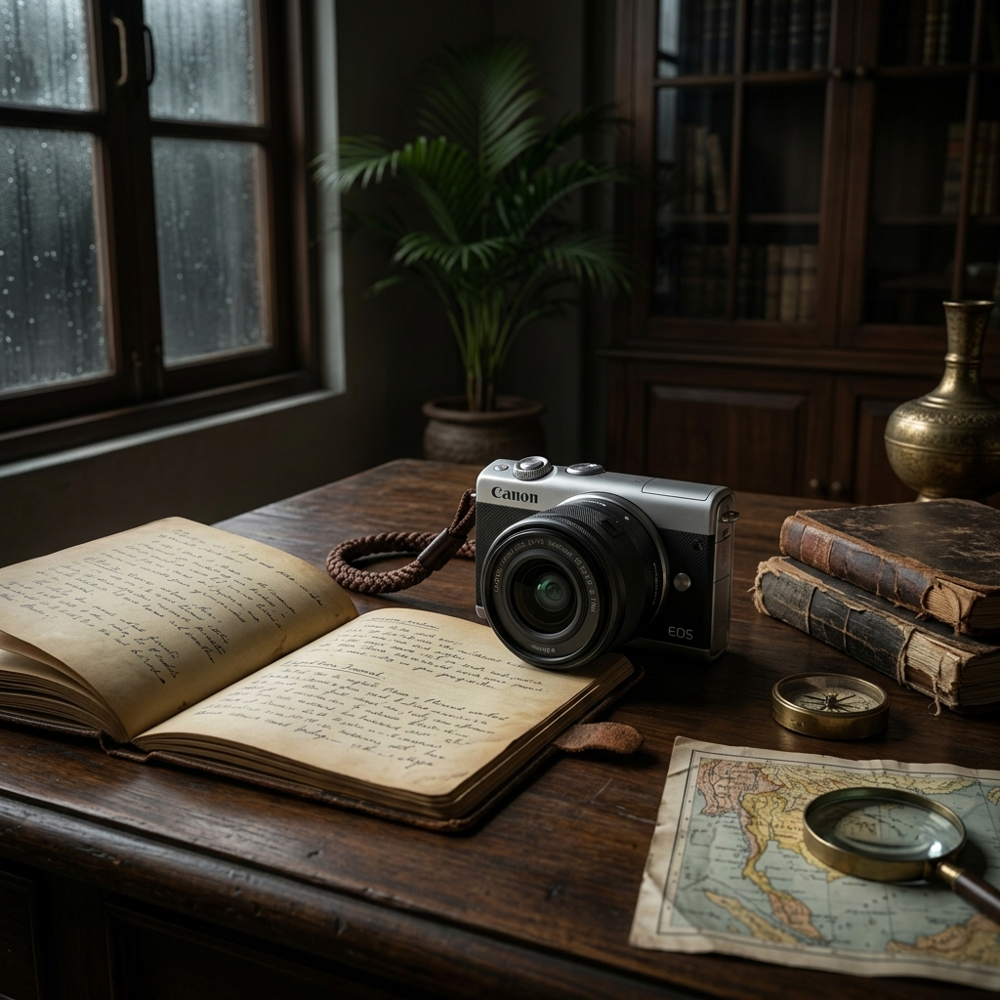

The heat in Ayutthaya hits you the moment you step off the train. It is a thick, ancient heat, settling heavily over the crumbling brick stupas and overgrown banyan tree roots. We arrived just before monsoon season fully broke, when the skies are a dramatic, swirling canvas of deep charcoal and bruised purple. It’s the perfect environment to push mechanics to their limits.
In the bag, we carried the Canon M200 — JP Olympics Edition. Sourced meticulously from a private collector in Tokyo, this ultra-rare release marries the modern agility of mirrorless systems with an exclusive heritage aesthetic. Navigating the tightly packed, humid alleys surrounding Wat Mahathat, the M200 remained completely unobtrusive yet remarkably capable.
Precision Under Pressure
To handle the blinding equatorial glare when the sun finally pierced the cloud cover, we relied on our newly acquired archival Oliver Peoples Kin optical frames. The titanium chassis and exquisite filigree detailing stood out stunningly against the rough, centuries-old laterite stone. The lenses completely eliminated the harsh tropical wash-out, returning the landscape to deep greens and ochres.

An object is only as valuable as the stories it survives. We don't just sell equipment; we sell artifacts that have proven their worth in the world.
The Verdict
The humidity of the Thai plains destroys lesser electronics. The M200 functioned flawlessly. From capturing the intricate details of a reclining Buddha at dusk to freezing the chaotic motion of a Tuk-Tuk tearing down a rain-slicked road, the sensor delivered exceptional dynamic range.
We look forward to passing this camera, and the optics that framed the journey, onto their next custodian. Because out here, in the heavy monsoon air, you quickly realize that the best gear is the gear that simply gets out of your way and lets you see.